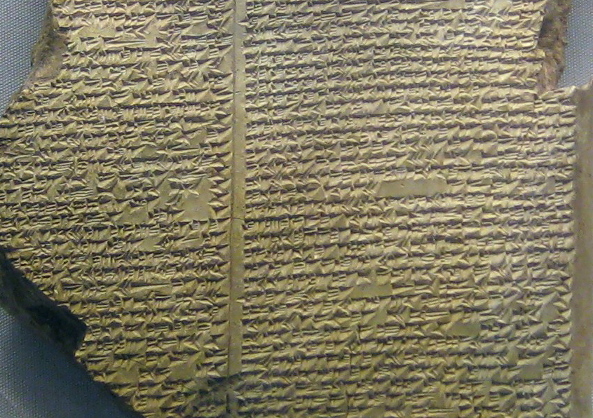

Start Ruling Your Life With Them
What did you know about books? Is it just an empty, paper made thing that nothing has to do with our existence. No, it is a total unstatement. We will guide you through the whole world of heros, happy endings, crazy unexpected turn arounds, which blow our mind! We will tell you about the best authors in the world, the best and most popular genres, that will encourage you to step on your way of reading. We will tell you about the most beautiful things, that has happened in this world – BOOKS!
Let's Get Started!
You can visit other pages of this website for better information:
- The most famous authors of our generation →
- The most interesting genres to read →
- The list of popular books →
History Of Books
So, should we start from the beginning? I guess so. I think it will be a cool journey through the centuries!
- Ancient Beginnings
Long before paper existed, people wanted to share their stories.The first "books" weren't made of paper at all. In Ancient Mesopotamia, people used clay tablets. They would scratch marks into wet clay and let it dry in the sun. Later, in Ancient Egypt, they discovered papyrus — a material made from a plant that grew along the Nile River. They rolled it into long scrolls, some of which were over 30 meters long!
 - From Scrolls to Pages
Around the 1st century, the codex was born. This was the first time someone thought to fold sheets of parchment (made from animal skin) and sew them together. This changed everything: for the first time, a reader could flip through pages instead of unrolling a giant scroll. In the Middle Ages, monks spent years hand-copying books, decorating them with beautiful gold and colors. These were called illuminated manuscripts.

- The Great Revolution
The biggest turning point happened in the 1440s. Johannes Gutenberg invented the printing press in Germany. Suddenly, a book that took a year to copy by hand could be printed in a day. Knowledge was no longer just for the rich; it became available to everyone. This led to the "Golden Age" of literature, where famous writers like Shakespeare and Dickens could reach thousands of readers.

- The Digital Era
Today, we are living through another revolution. We still love the smell of paper and the feel of a physical book, but we also have e-books and audiobooks. We can carry an entire library in our pockets. However, the goal remains the same: to tell a story, share an idea, and connect one mind to another.

{kind=link}
The Conclusion
In the end, books are more than just ink on paper; they are the ultimate time machines. They allow us to travel through centuries, explore distant worlds, and inhabit the minds of others. Writing a book is an act of courage — it is a way to turn the chaos of thought into a lasting legacy that can inspire generations to come...